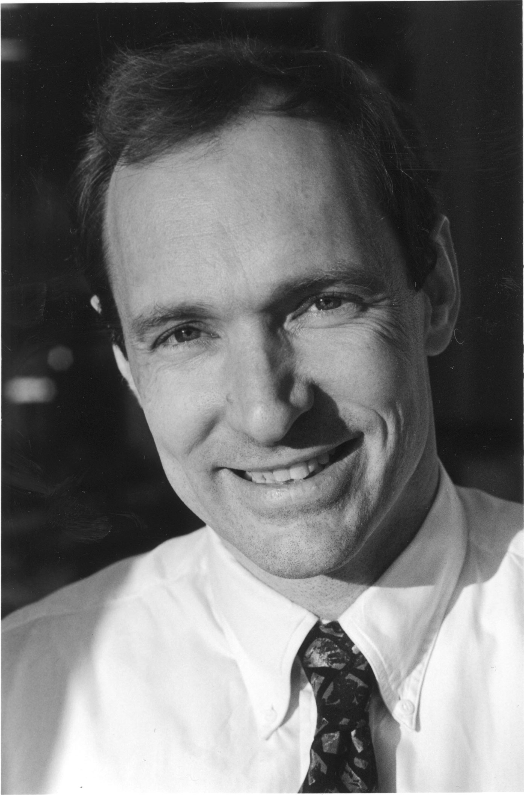

Pioneers of the Internet
Vannevar Bush, D.Eng

Vannevar Bush was a US electrical engineer and scientist. In the 1930’s, Bush started to work on a mechanical machine known as the differential analyzer. This was a machine that would take in an equation and show its graphical output. This machine was able to handle 18 independent variables at once and is considered one of the most important breakthroughs for the electronic analogue computer.
Doug Englebart, Ph.D

Doug Englebart was an American inventor in the 1950’s. Englebart’s laboratory was the second site on the ARPANET, and Englebart wanted to make the Internet available for the consumer. As a result, Englebart created the computer mouse and the first ever GUI for a computer. Englebart’s inventions not only made it easier for the average consumer to interact with a computer, but it also one him the 1997 A.M. Turing Award.
Ted Nelson, Ph.D.
Ted Nelson is a computer scientist and a publisher. Nelson is the one who coined the term hypertext in 1965 as a term that was used to describe links embedded in text to connect people to further sources of information. Nelson later went on to start a global electronic publishing project called Xanadu.
Steve Jobs / Steve Wozniak
Steve Jobs and Steve Wozniak are the co-founders of Apple. Jobs and Wozniak created the first Apple computer in their garage to create a computer that is more user friendly for the consumer. Wozniak’s role in the company was more on the hardware side of things, while Job’s is largely accredited for creating the creative GUI that Apple had over any company at the time. Wozniak and Jobs are largely the start for consumers having personal computers in their homes.
Tim Berners-Lee, KBE
Tim Berners-Lee is a British computer scientist who is accredited with the creation of the World Wide Web. Berners-Lee went to the University of Oxford and later went on to work at Plessey Telecommunications. While there Berners-Lee came up with a program that could store links in files to other files within and separate from that file. This program is what we now know as hypertext. With this new program, Berners-Lee wanted to create a way to use the Internet to store and send these hyperlinks. This in turn created the HTTP protocol which started what we now know as the World Wide Web.
Marc Andreessen / Eric Bina
Mark Andreessen and Eric Bina are the inventors of Mosaic. Andreessen and Bina were both employees at the National Center for Supercomputing Applications when the idea for Mosaic was first born. Mosaic was one of the first Internet browsers and it’s use largely contributed to the widespread adoption of the Internet. Mosaic’s main achievement at the time was that it was the first web browser that used multimedia integration.
Rob Hartill, Ph.D.

Rob Hartill is a computer programmer and web designer who is best known for his role in founding the Apache web server. Apache is a hugely popular webserver that is freeware and has been adopted by millions of sites. Its source code is available, it has allowed research on Web service to develop and gain credibility in the commercial world.
Lou Montulli
Lou Montulli is a programmer who is well known for his web browser work. Montulli co-created Lynx, a text web browser that was one of the first web browsers created. Montulli is also responsible for innovations such as HTTP cookies, the blink element, HTTP proxying, and more. In 2002 he was named as one of the top 100 innovators in the world under 35.
Vint Cerf

Vint Cerf is known as one of the fathers of the Internet. Cerf has been involved with the creation of the Internet from even before the Internet was created. Cerf worked for the networking group that connected the first two nodes of the ARPANET, Cerf then met Bob Kahn where he wrote the first TCP protocol called Specification of Internet Transmission Control Program. Cerf then worked for DARPA where he funded various groups to develop technologies for TCP, IP, PRNET, and SATNET.
Bob Kahn
Bob Kahn is another one of the fathers of the Internet. Kahn’s main contribution to the Internet is two of the most important protocols on the Internet, the IP protocol and the TCP protocol. These two protocols are how can transfer from one computer to another. Without these protocols in place the entire Internet would not be able to function the way it does today.